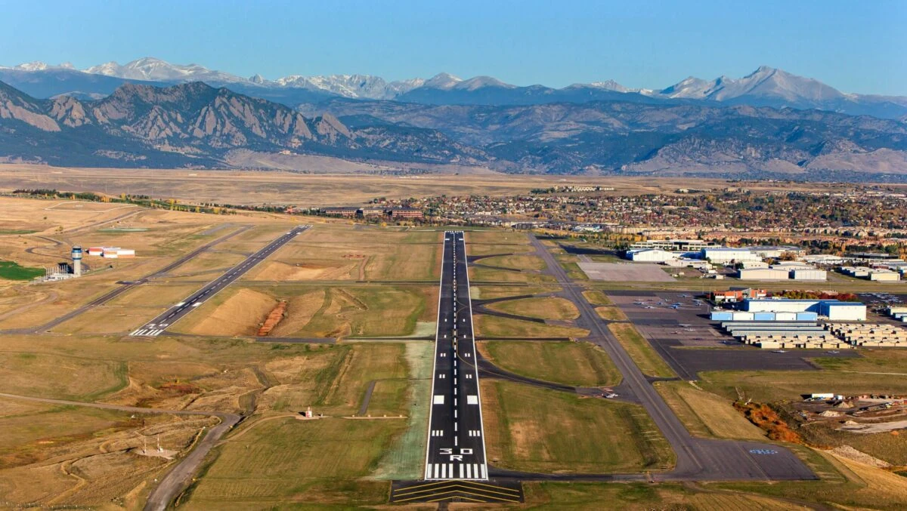

Aviation
Experience
I have about 30 hours of flight time. I have completed my solo flight and will be completing my cross country solo flight in the next few weeks. I currently work at Rocky Mountain Flight School.
Aircraft
-
Cessna 172R

-
Cirrus SR22

Airports
-
Rocky Mountain Metropolitan Airport (KBJC)
 -
Cheyenne Regional Airport/Jerry Olson Field

-
Vance Brand Airport